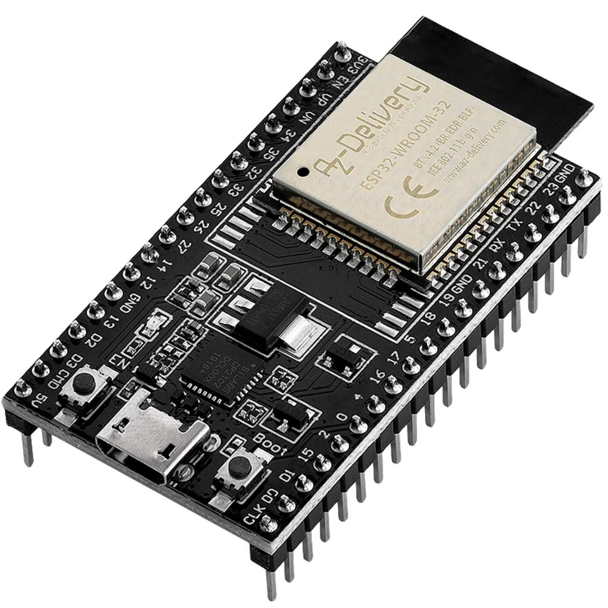
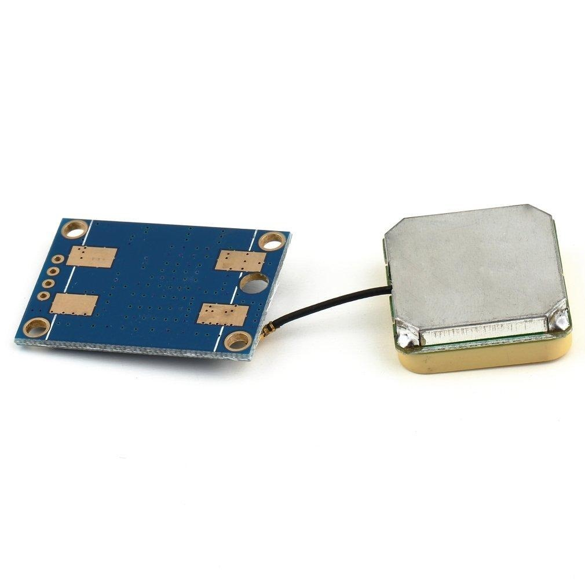
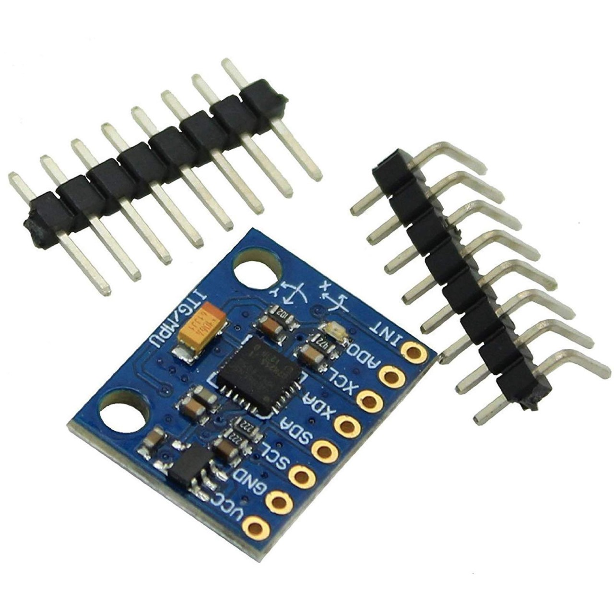
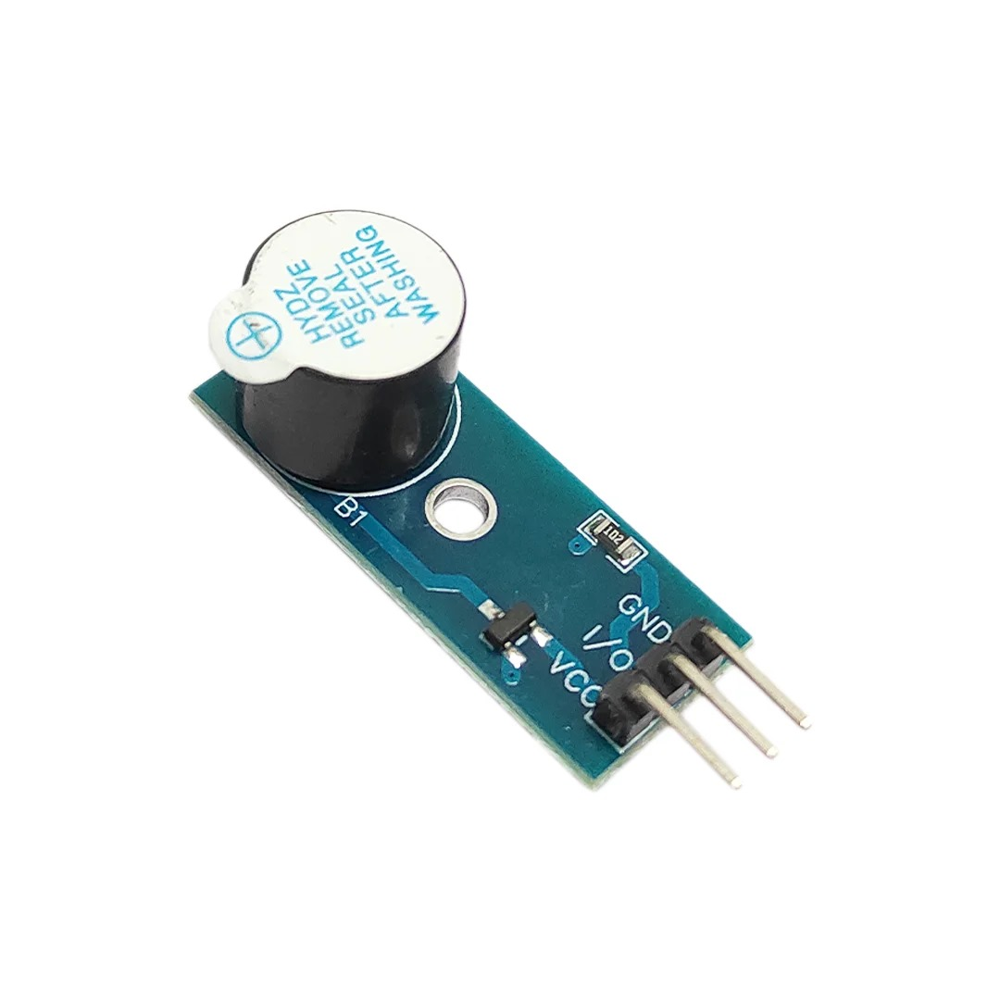

The primary objective of ARAD is to enhance survival rates in avalanche incidents by reducing response times through an intelligent, automated system. Unlike conventional distress devices, which require manual activation, ARAD operates autonomously—monitoring user activity, detecting prolonged stillness, and automatically sending an SOS message with GPS coordinates when a victim remains immobile for a specified period
The goal is to develop a low-cost, energy-efficient, and highly reliable safety device that can be widely adopted by adventurers, rescue teams, and disaster response agencies to improve emergency response efficiency.
COMPONENTS

ESP-32 WROOM 32
The ESP32-WROOM-32 is a versatile and powerful Wi-Fi + Bluetooth® + Bluetooth LE module, designed to support a wide range of applications. It is equally suitable for low-power sensor networks as well as high-demand tasks like voice encoding, music streaming, and MP3 decoding.
NEO-6M GPS Module
The NEO-6M GPS module is a compact GPS receiver that can locate all locations on Earth by tracking approximately 22 satellites. It features a high-performance u-blox 6 positioning engine and is commonly used in IoT projects due to its low power consumption


MPU-6050 Accelerometer Gyroscope Module
he MPU-6050 is a module with a 3-axis accelerometer and a 3-axis gyroscope. The gyroscope measures rotational velocity (rad/s). This is the change of the angular position over time along the X, Y, and Z-axis (roll, pitch, and yaw). This allows us to determine the orientation of an object.
Buzzer Passive Arduino Programmable
Unlike an active buzzer, a passive buzzer requires an external signal to produce sound. In this step-by-step guide, we’ll show you how to set up the Passive Buzzer module with an Arduino and create projects that generate different sounds and melodies.

SIM800L GPRS GSM Module
The SIM800L GSM/GPRS module is a miniature GSM modem. It can be used in a variety of IoT projects and allows for GPRS transmission, sending and receiving SMS, and making and receiving voice calls. It is a low-cost and small-footprint module that supports quad band frequency.
HW 9V battery with Connectors
The nine-volt battery, or 9-volt battery, is an electric battery that supplies a nominal voltage of 9 volts. Actual voltage measures 7.2 to 9.6 volts, depending on battery chemistry.